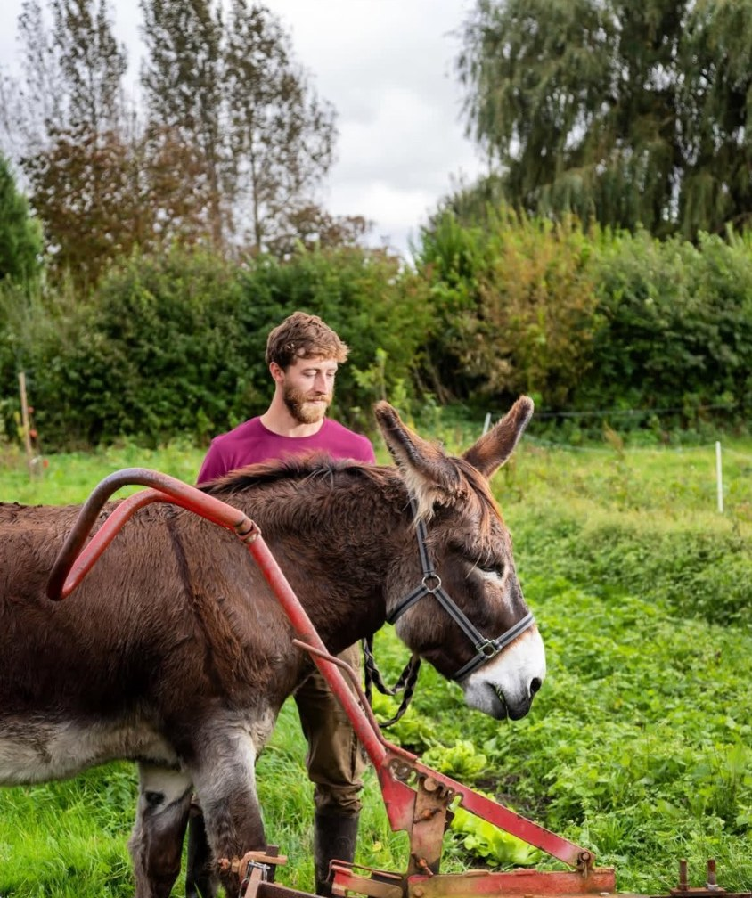

Biodiversité
Une ferme pensée pour la vie : le sol, les insectes, les oiseaux et les cultures avancent ensemble.
Micro-ferme organique · Guînes
Des fruits et légumes de saison, cultivés au pas de l’âne pour la biodiversité et pour une nourriture saine, ici, à Guînes.

La ferme
FOOD est une ferme organique qui œuvre pour la biodiversité
 .
Ici, pas de machine : ce sont nos ânes
qui tirent les outils. Nous cultivons des fruits et légumes de saison
.
Ici, pas de machine : ce sont nos ânes
qui tirent les outils. Nous cultivons des fruits et légumes de saison
 pour offrir une nourriture saine à la population locale. Parce que la santé est dans l’assiette.
pour offrir une nourriture saine à la population locale. Parce que la santé est dans l’assiette.
Quatre idées simples guident le travail de la ferme, du débroussaillage du terrain jusqu’à la dernière récolte.
Une ferme pensée pour la vie : le sol, les insectes, les oiseaux et les cultures avancent ensemble.
Pas de tracteur au champ. Benji et Téoula tirent les outils, sans moteur et sans bruit.
La santé est dans l’assiette : des légumes de saison, cultivés sans produits chimiques de synthèse.
Une nourriture saine pour la population locale : cultivée à Guînes, mangée tout près.
Traction asine
L’équipe à quatre pattes
Sur la ferme, le travail du sol se fait sans moteur. Voici celles et ceux qui le font.

Traction
Benji tire les outils dans les planches, pas à pas. Pas de moteur, pas de bruit : juste le rythme de la marche.

Traction
Téoula fait équipe avec Benji. À deux, ils préparent le sol des cultures sans le tasser.

Débroussaillage
Philomène travaille au sol et débroussaille le terrain. C’est par là que commence chaque nouvelle parcelle.
Fruits et légumes de saison
Des repères de saison pour le nord de la France. Ce qui est prêt dépend de la météo et des cultures de l’année.
Mars · Avril · Mai
Juin · Juillet · Août
Septembre · Octobre · Novembre
Décembre · Janvier · Février
Les récoltes
Cultivés selon la charte Nature & Progrès et récoltés à leur saison, pour la table des habitants d’ici.


Le label
La mention Nature & Progrès repose sur une charte exigeante, qui va au-delà du cahier des charges bio européen, et sur un système participatif de garantie : producteurs et consommateurs visitent ensemble les fermes.
Ni engrais ni pesticides de synthèse : la charte les exclut.
Le sol est travaillé à la traction asine, sans engin qui le tasse.
Producteurs et consommateurs contrôlent ensemble le respect de la charte.
Une agriculture à taille humaine, tournée vers les habitants du territoire.
Nous trouver